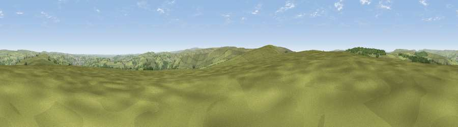

Great Manshead Hill
#20110 in England · top 36% of its area beats it · near Cragg ValeWhere it is
The exact computed spot (SE 00248 20471). Click the marker for map links.
The view, rendered

A 360° render of this exact spot computed from the terrain model, tree cover and land cover — summer colours, afternoon light, calibrated against photographs of famous viewpoints. Real trees, hedges and buildings will differ in detail.
The panorama
Grey silhouette: terrain skyline in each direction (720 bearings, Earth curvature and refraction included). Dashed green: skyline with trees (+15 m) and buildings (+8 m) as obstacles. Blue strip: how far the ground is visible on each bearing.
Where the view opens
Wedge length = distance to the farthest visible ground on that bearing (vegetation-aware). Rings at 10, 25 and 50 km.
What fills the view
85% grassland · 12% woodland · 3% built-up ·
Angular shares of the visible panorama (visual magnitude), not map area. Landscape diversity 0.23 (0–1 Shannon).
Key numbers
More beautiful places nearby
The staircase of upgrades: each row has a higher view potential than everything closer. Driving times are estimates from straight-line distance, calibrated against real road routing — check an actual route before setting out.
| Place | Direction | Drive | Score |
|---|---|---|---|
| Viewpoint near Cragg Vale | NE · 3 km | ~7 min | 62.0 |
| Viewpoint near Timbercliffe | SW · 5 km | ~11 min | 68.7 |
| Viewpoint near Denshaw | SSW · 11 km | ~21 min | 69.3 |
| Viewpoint near Stump Cross | NE · 11 km | ~21 min | 71.5 |
| Viewpoint near Shaw | SSW · 13 km | ~24 min | 72.9 |
| Viewpoint near Greenfield | S · 18 km | ~31 min | 76.0 |
| Viewpoint near Edenfield | W · 18 km | ~31 min | 77.5 |
| Darwen Hill | W · 32 km | ~50 min | 80.7 |
53.68070, -1.99773 · source: osm peak · position refined by local search. Computed location — check access rights before visiting.